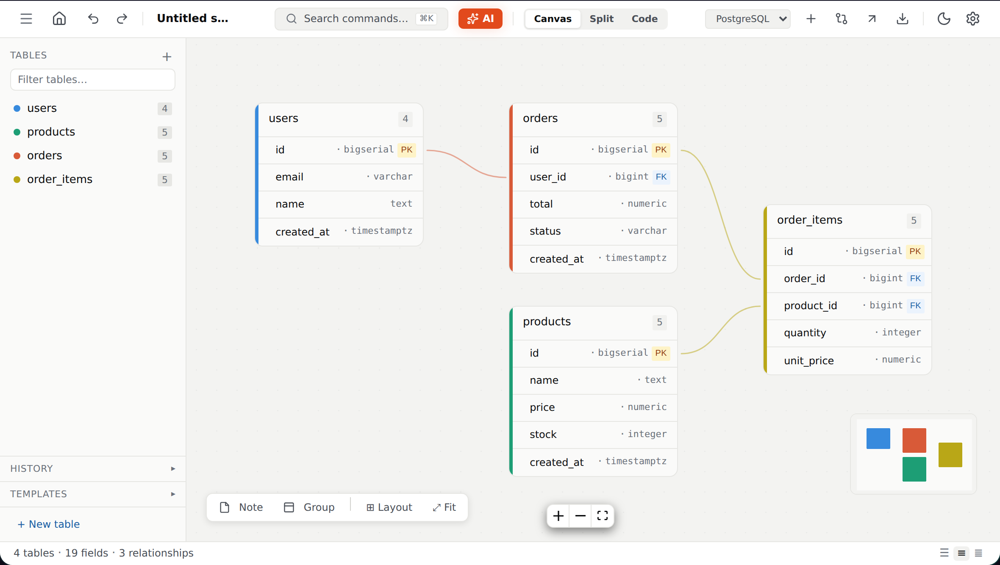

Snapshots and diff
Restore any version, or diff it against the current schema. Renames show as drop + add, so read migrations before running them.
Draw tables and relationships, import the SQL or Prisma you already have, and export what your stack needs. No account. Nothing uploaded.

Primary keyForeign key — draws the lineImports and exports the formats you already use
A schema tool that stays out of your way. Modellr runs entirely in your browser: your tables, relationships and snapshots live in IndexedDB on your machine. No account, no server, nothing to sync.
Projects are stored in your browser. Back everything up as one JSON file and restore it on any machine.
Importers and exporters are covered by round-trip tests, so what you paste in is what comes back out.
Virtualised canvas and a layout worker keep dragging near 60 fps at a thousand tables.
Paste a pg_dump, a mysqldump or a Prisma schema and get a diagram. Change it on the canvas, then copy SQL, Prisma, Drizzle or DBML. Generated live from the schema in the editor.
Read the import docsCREATE TABLE users ( id uuid PRIMARY KEY, email text NOT NULL UNIQUE, created_at timestamptz DEFAULT now() ); CREATE TABLE posts ( id serial PRIMARY KEY, author_id uuid NOT NULL REFERENCES users(id), title text NOT NULL );
// Generated by Modellr generator client { provider = "prisma-client-js" } model User { id String @id @default(cuid()) email String @unique created_at DateTime @default(now()) posts Post[] }
Save versions as you go, compare against any of them and generate migration SQL with destructive-change warnings. Share a read-only link that carries the whole schema in the URL.
See all featuresRestore any version, or diff it against the current schema. Renames show as drop + add, so read migrations before running them.
The schema is compressed into the URL. Nothing is uploaded; recipients get a read-only snapshot they can save as their own.
OpenAI, OpenRouter or a local Ollama, called straight from your browser.
Drop the diagram into a README or a design doc.
Search tables, jump anywhere, run any action from the keyboard.
Accounts, cloud sync and billing removed. Everything runs in the browser under the MIT license.
SQL and Prisma importers rewritten; SQL, Prisma, Drizzle and DBML exporters covered by round-trip tests.
Browser-direct client for OpenAI-compatible endpoints, including local models.
Selector-based store, virtualised rendering and a layout worker.
Yes. It is MIT-licensed open-source software with no paid plan, no ads and no account. If it saved you time you can optionally buy the author a coffee; that unlocks nothing.
In your browser (IndexedDB). Nothing is uploaded. Clearing site data deletes them, so use Backup now and then.
No. It works from SQL or Prisma text you paste in, and exports text. It never touches a live database.
SQL for PostgreSQL, MySQL, SQLite and SQL Server, plus Prisma, Drizzle, DBML, JSON, PNG and SVG.
Optional and bring-your-own-key. Your browser calls the provider you choose (OpenAI, OpenRouter or a local Ollama) directly. Proposals are reviewed before they touch your schema.
Free and open source. No sign-up, no install.